^SP500TR × FRED 的 CPIAUCNS）延伸至 2026 年，使滚动窗口覆盖到最新。每月投入 $100，持有至 40 年期末，永不卖出。本页所有图表均由本项目 python main.py 生成于 results/charts/。几乎每个投资者都听过一句话——「等回调了再买」。直觉上，能在低点买入显然更划算。于是我们做一个极端实验：假设你是上帝，精确地知道未来每一次下跌的最低点。你把每月的 $100 攒成现金，只在「两个历史新高之间的最低点」一次性全部投入。这就是「上帝抄底（God Buy the Dip）」。
它的对手是最朴素的定投（DCA）：每月 $100，到手就买，从不等待。两者投入完全相同、买的是同一个指数。谁会赢？
「历史新高」指数走势如下，绿点标出每一个创出历史新高的月份。只有当市场跌破前期高点时，才算进入「回调」。
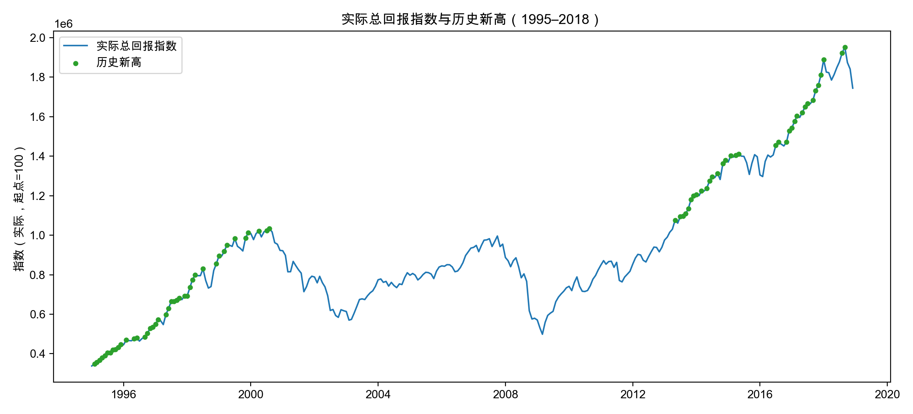
把每一轮回调的最低点用红点标出——这些就是上帝会出手的时刻。最显眼的一个在 2009 年 3 月（金融危机底部）。
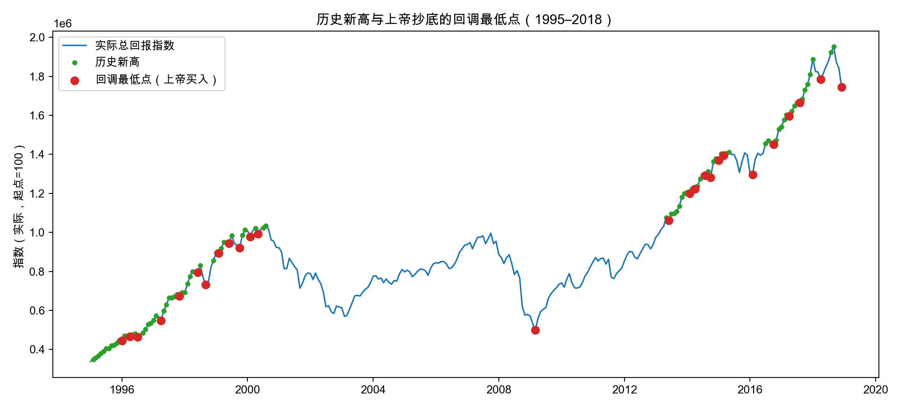
把图 2 放大到 2016–2018 这一段，可以逐月看清细节：牛市中几乎月月创新高（绿点），其间几次小幅回调的最低点（红点）就是上帝在此期间的买入时刻——2016-02、2016-10、2017-04、2017-08、2018-04、2018-12。
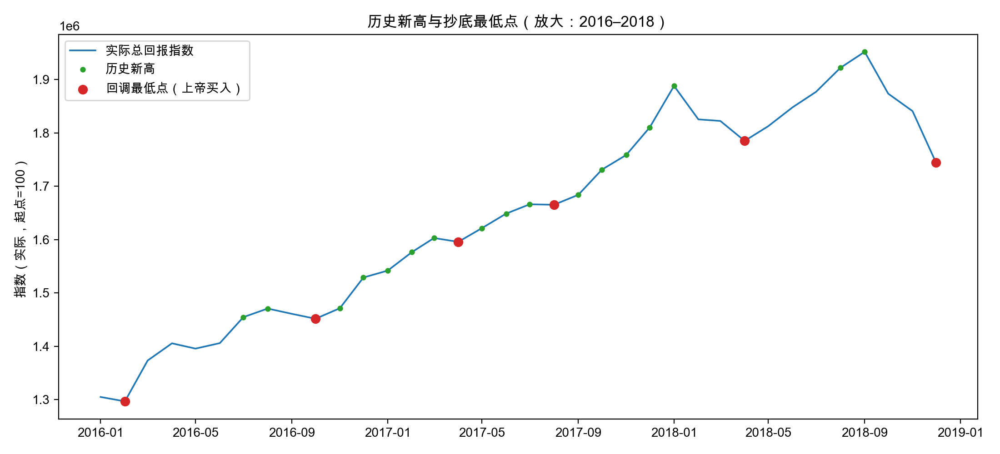
上帝的现金是怎么积累和投出的？下图把每一刻的资金拆成两块堆叠：已投入市场 与 等待中的现金，二者之和始终等于累计投入。可以看到 2000–2009 年间现金不断堆高，直到 2009 年 3 月一次性投入约 $10,600，现金瞬间清零。
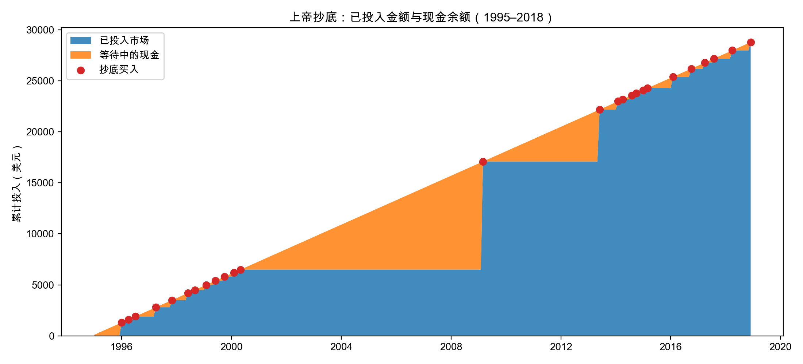
因为完美抄在了 2009 年的底，这个区间里上帝确实赢了：
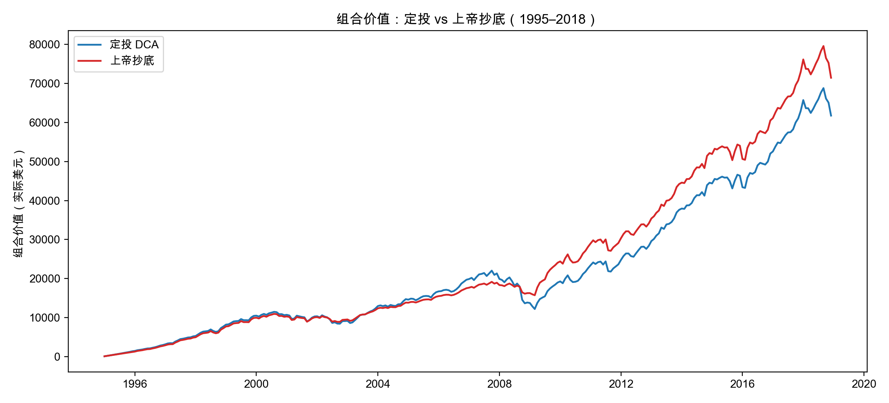
为什么 2009 年那一笔如此关键？下图的黑色柱表示「在某月投入的每 $100，到 2018 年底会长成多少」。越早投、买得越便宜，长得越高：1995 年 1 月的 $100 长成了约 $516；而 2009 年 3 月那一大笔买在低点，每 $100 也长成约 $350。红点标出上帝实际买入的月份。
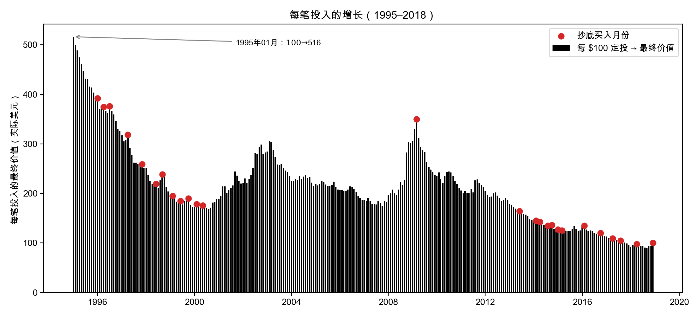
如果大崩盘出现在投资生涯的早期，抄底威力惊人——因为抄底买入的便宜筹码有最长的时间去复利增长。1928–1957 区间里，1932 年 6 月（大萧条底部，实际回撤约 −77%）的每 $100，到期末长成约 $1,585（原文给出的数字约为 $4,000，差异源于窗口端点与归一化口径）。
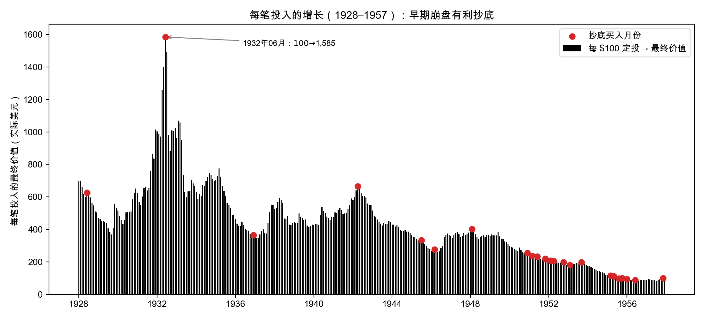
对 1920–1986 的每一个起始年，跑一遍完整的 40 年（共 67 个滚动窗口，其中最后 3 个借助现代延伸数据覆盖至 2025 年），计算「上帝抄底 ÷ 定投 − 1」。零线以上是抄底赢，零线以下是定投赢。
^SP500TR，已含股息再投资）提供名义总回报，再用 FRED 的 CPI-U（CPIAUCNS）做通胀调整，锚定在 Shiller 末值上逐月链接。图中紫色阴影区（1984 起）即为含此延伸数据的窗口。
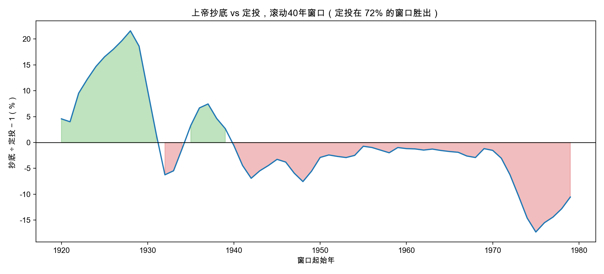
这是抄底最糟的剧本。投资者从 1975 年开始，但市场仍深陷 1973–74 熊市的余波之中、迟迟不创新高，因此在很长时间里「没有新高 → 没有可抄的回调」，现金只能干等。等到上帝第一次出手，已经到了约 1985 年——它错过了 1974 年的大底。
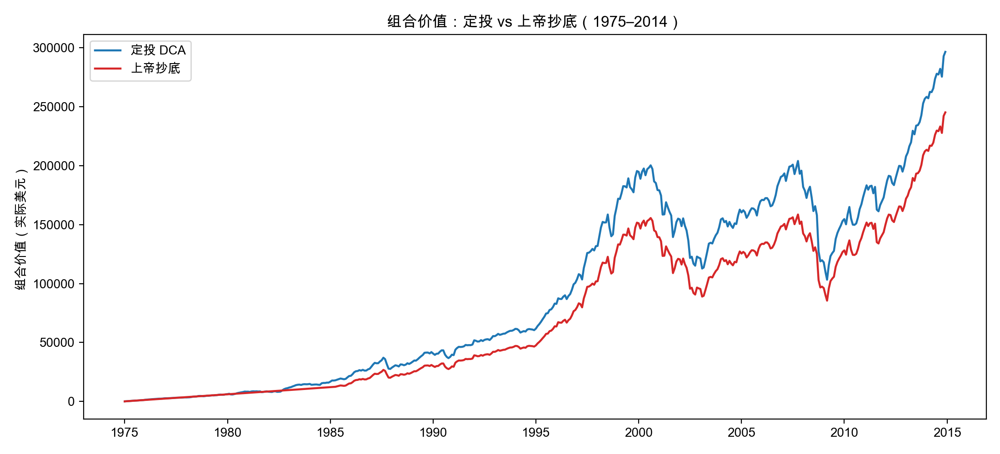
下图最能说明问题：本区间最值钱的投入恰恰是最早期（1975–1982）的那些（1975 年 1 月每 $100 → 约 $2,015），但上帝的第一个红点要到 ~1985 年才出现，完美错过了所有最便宜的筹码。
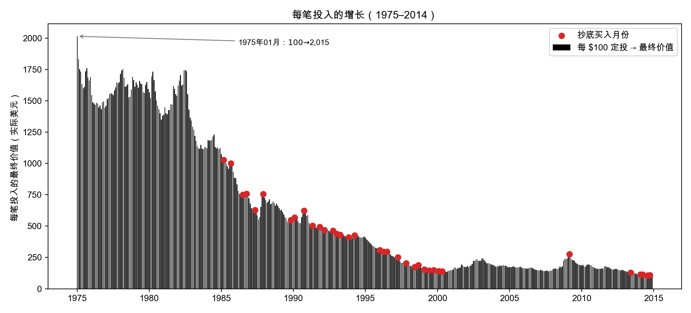
上帝尚且近七成跑输，何况凡人。如果把每一次买入仅仅推迟 2 个月（依然假设你大致知道底部在哪），结果是灾难性的——97.0% 的窗口跑输定投。
| 策略 | 跑赢定投的窗口比例 | 跑输定投 |
|---|---|---|
| 上帝抄底（完美底部） | 31.3% | 68.7% |
| 延迟 1 个月 | 25.4% | 74.6% |
| 延迟 2 个月 | 3.0% | 97.0% |
| 延迟 3 个月 | 0.0% | 100.0% |
| 延迟 6 个月 | 1.5% | 98.5% |
注：上表为含现代延伸的全部 67 个窗口（1920–1986）。与原文可比的延伸前 64 个窗口口径下，上帝抄底跑输 71.9%、延迟 2 个月跑输 96.9%。
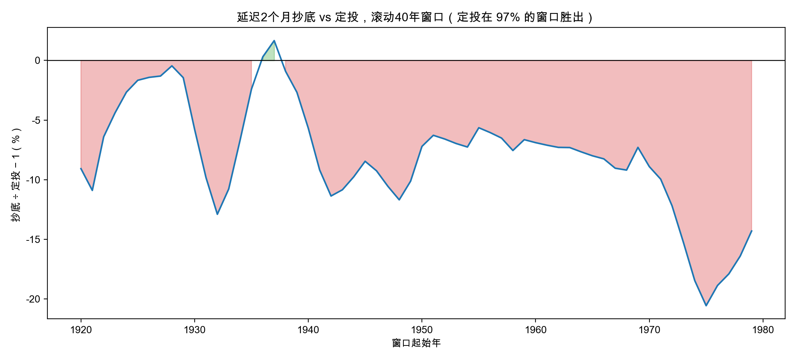
用本文 1995–2018 的真实数据最能说明问题：
| 买入时机 | 实际指数点位 | 每 $100 到 2018 年底 |
|---|---|---|
| 1995 年 1 月「原价」买入 | 337,864 | $516 |
| 2009 年 3 月抄「世纪大底」（−52%） | 498,468 | $350 |
注意：那个 80 年一遇的 2009 年大底，点位仍比 1995 年的「原价」贵了约 1.5 倍。换句话说，定投在 1995–2000 年平静期买入的份额，比上帝苦等 14 年才抄到的大底还要便宜，而且多复利了 14 年——这个差距，就是定投取胜的根源。
三个对抄底不利的力量：
所以，即便手握完美的水晶球，这个策略真正的硬伤不是择时不准，而是「根本没在场」。
既然定投取胜的根源是市场长期向上，那一个自然的问题是：如果市场不涨呢？我们用随机游走生成两种「平行宇宙」的市场，时间区间与真实历史完全相同，每种各模拟 80 条路径，再跑同样的滚动 40 年「定投 vs 上帝抄底」：
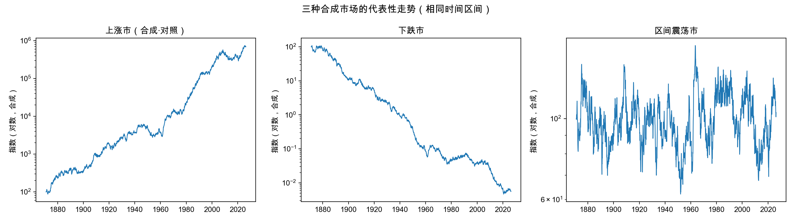
结果非常清晰——上帝抄底能否战胜定投，完全取决于市场往哪个方向走：
| 市场环境 | 上帝抄底跑赢定投的比例 | 中位超额收益 |
|---|---|---|
| 下跌市（模拟） | 97.0% | +136.8% |
| 区间震荡市（模拟） | 53.8% | +1.5% |
| 上涨市（真实历史） | 31.3% | — |
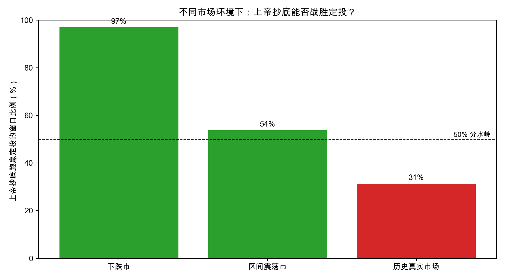
为什么下跌市里抄底反而大胜？因为市场不断下跌时几乎不再创新高，上帝大部分时间只是持币观望（现金 0% 保值），而定投却把钱源源不断地投进一个一路下跌的市场——这正是「不去接下落的刀」。下图一目了然：
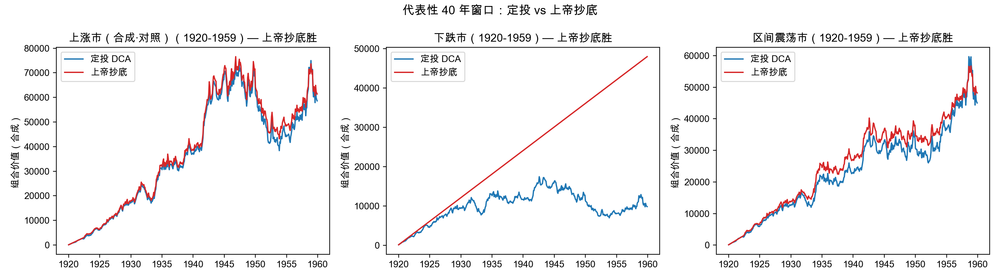
这与前一节的结论正好互补：「没在场」只有在市场上涨时才是错的。市场一旦不涨甚至下跌，「等底部、留现金」反而成了优势——这也提醒我们，定投并非万能，它押注的是「人类经济长期向上」。
说明：以上为简化的随机游走模型，仅用于阐释机制，并非对未来的预测。真实历史用作「上涨市」参照；一个无记忆的随机上涨（约 61%）其实比真实市场（31%）更温和，因为真实牛市的上行更具持续性。